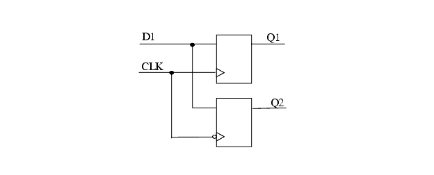

Description
This rule detects the input DDR flip-flop.Input DDR is accomplished via a single input signal driving two registers in the IOB. Both registers are clocked on the rising edge of their respective clocks. With proper clock forwarding, alternating bits from the input signal are clocked in on the rising edge of the two clocks, which are 180 degrees out of phase.
Policy
DESIGN
Ruleset
STRUCTURE
Language
VHDL/Verilog
Type
Hardware
Severity
Note
... always @(posedge CLK) Q1 <= D1; always @(posedge CLK) Q2 <= D1; ...